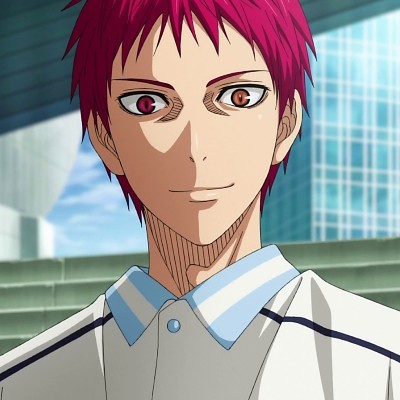
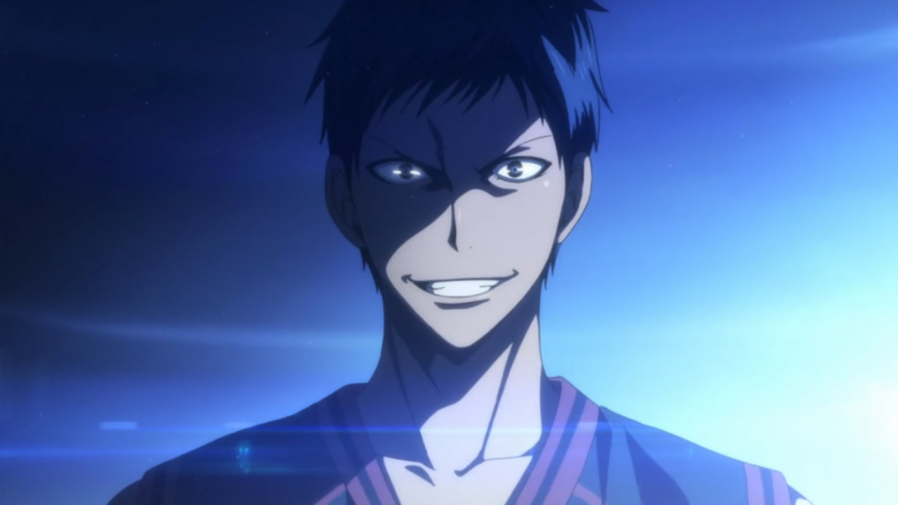
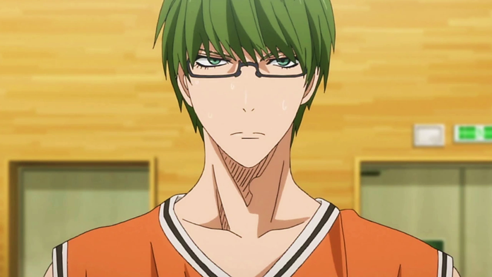
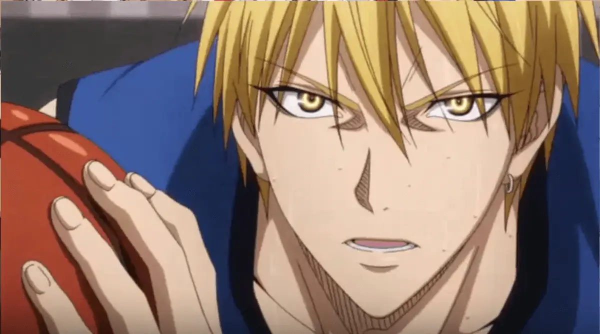
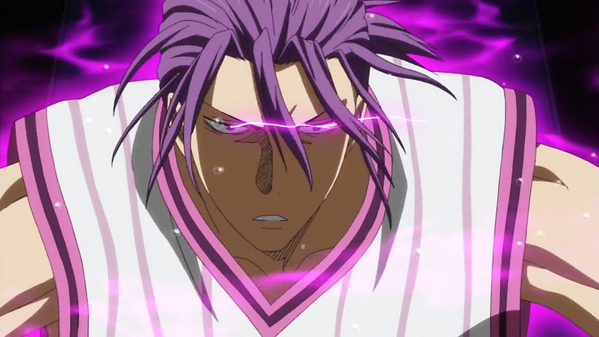
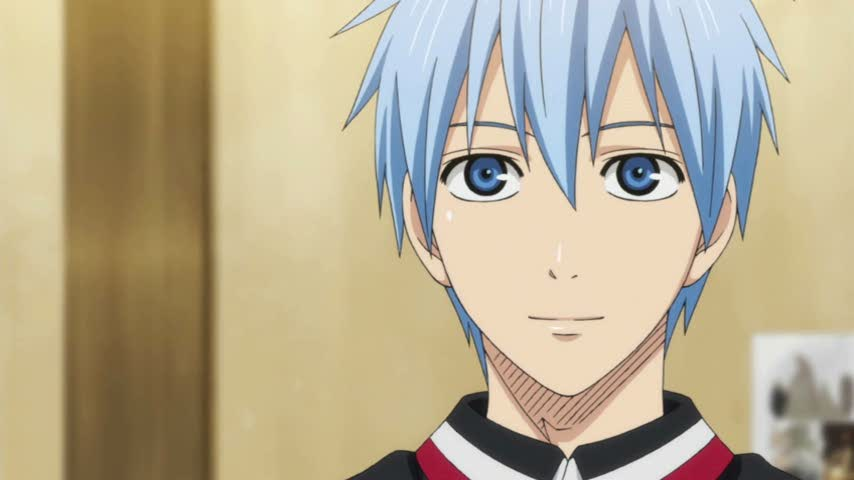

|
|
Akashi Seijuro
O antigo capitão da geração de milagres e atual capitão da Rakuzan, conhecido por muitos como imperador, Akashi Seijuro joga como armador,
sua principal habilidade é o "Emperor eye", no qual é capaz de enxergar as mínimas contrações musculares do oponente,
além de ter visão completa da quadra, na prática ele é capaz de prever o futuro, veste o uniforme de número 4 e tem como frase de efeito: "Zu ga Takai zo" -
ou em português "Me olhe de baixo".

|
Aomine Daiki
O ás da geração de milagres, Aomine Daiki atualmente joga como pivô pela Toho Gakuen, conhecido por sua grande agilidade, sendo comparado muitas vezes
com uma pantera quando entra em quadra, sua frase mais marcante é: "Ore ni kateru no wa ore dake da ou "O único que pode me vencer sou eu mesmo".

|
Midorima Shintarou
Midorima é o mais próximo que a Kiseki no sedai tem de um atirador de elite, a junção de seu enorme talento e forte conexão com seu signo faz com que ele realize arremessos
com 100% precisão independente da distância em que ele estiver da cesta, atualmente joga pelo colégio Shutoku.

|
Kise Ryota
Conhecido por ser um copiador nato, Kyse Ryota tem uma grande facilidade em aprender as técnicas de seus adversários, sendo necessário vê-las apenas uma vez para isso, com a
cópia perfeita, sua principal habilidade, ele pode copiar qualquer técnica e fazê-la 2x melhor que o usuário original, em contrapartida, se o jogador for alguém do nível dele
seu corpo se cansa muito rápido, joga como titular na academia Kaijo.

|
Murasakibara Atsushi
Por possuir incríveis 2,18 metros de altura em seus 16 anos ganhou o título de muralha da geração, atualmente joga pelo colégio Yosen, onde é conhecido por sua
defesa impenetrável, sendo o único da geração dos milagres a vencer uma partida sem deixar o time adversário marcar um único ponto.

|
Kuroko Tetsuya
Visto como um mito pelos torcedores da escola Teiko, Kuroko recebeu o título de "Jogador fantasma" por possuir uma presença muito fraca e ser praticamente invisível para todos,
o qual, quando combinada com sua enorme perícia em passes o torna um oponente muito perigoso, o único problema é que para extrair todo o seu potencial ele precisa de um jogador
muito habilidoso para ser sua dupla, o qual ficam conhecidos como "Luz e sombra".

|